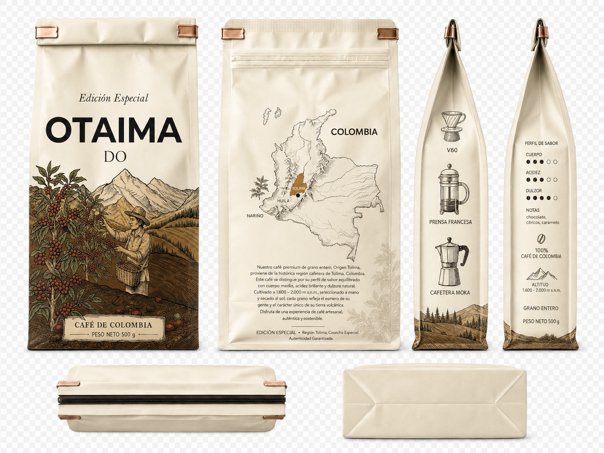

Una sola finca. Una sola cosecha. Un solo objetivo: el café más limpio y honesto que sabemos hacer. Do es la primera nota de nuestra escala. Lo esencial, sin artificios.
El nombre Do es la primera nota de la escala musical. Simple, esencial, fundacional. Y eso es exactamente lo que es este café: el punto de partida, el grano en su forma más honesta, sin mezclas ni adornos.
Do nace en el sur del Tolima, en las veredas que rodean a Planadas y Rioblanco, donde el café arábica encuentra sus condiciones ideales entre los 1.700 y 2.000 metros de altitud. Aquí, una sola finca, una sola familia, una sola cosecha. No mezclamos lotes. No buscamos sabores que no estén ya en el grano. Solo lo cuidamos, lo respetamos, lo dejamos hablar.
Los buenos cafés no se construyen. Se descubren.
La fermentación es natural: las cerezas se secan al sol con la pulpa intacta, lo que permite que los azúcares del fruto se integren al grano durante el secado. El resultado es un café con un cuerpo suave, una acidez delicada y notas inesperadas a frutos secos, caramelo y un toque a chocolate de leche que recuerda a las tabletas artesanales que aún se venden en las plazas tolimenses.
Do no busca impresionar. Busca acompañar. Es café para las mañanas largas, las conversaciones suaves, los momentos donde no necesitas que el café grite. Solo necesitas que esté ahí, perfectamente, una taza tras otra.
Limpia y revela la delicadeza de Do. Las notas suaves se perciben con total claridad.
Rápido, limpio, sorprendentemente complejo. La forma moderna de disfrutar Do.
Para los amantes del café tradicional colombiano. Cuerpo y aroma intensos.
Café de origen único. Una sola finca. Una sola cosecha. La forma más honesta de empezar el día.
Comprar Do · $52.000